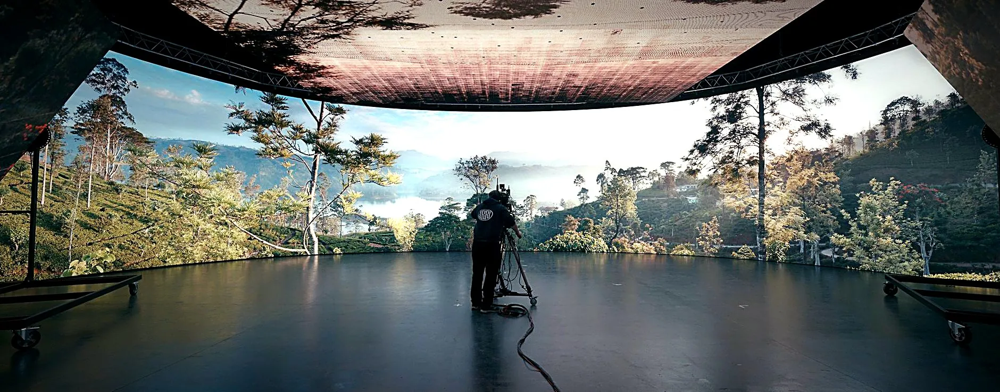
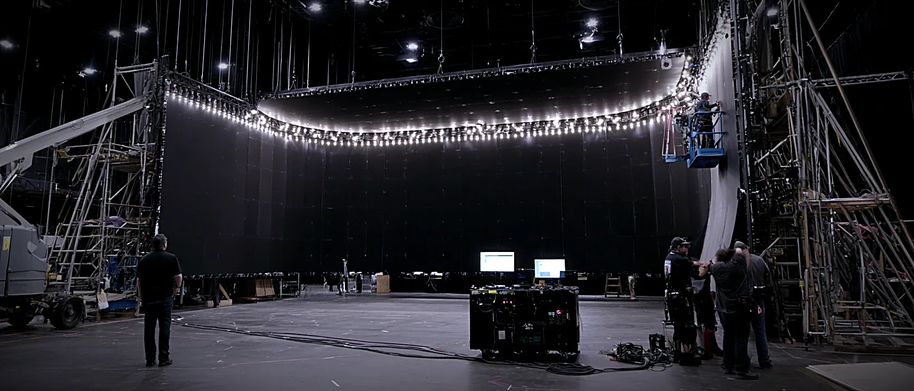

LED Video Volumes Any world. One stage.

Cineva builds LED volumes for film and television work, including walls, ceilings, processors, scaffold, rigging, playback, and crew.
Every volume is planned around the shot: camera position, lensing, brightness, colour, stage size, schedule, and how the floor actually needs to work. We are not just dropping off panels. We are helping build a shooting environment.
The goal is simple: a volume that arrives organized, installs cleanly, talks properly to camera, and lets production focus on the frame. From prep to first unit, Cineva brings the equipment, crew, and on-set fluency to make LED feel like part of the production, not another problem to manage.
Panels for every shot.
Cineva carries a wide range of LED, with pixel pitches from 1.9 to 7mm, indoor and outdoor. We match the panel to the shot rather than force the shot onto whatever is on the truck, so a flat backdrop, a curved volume, or an exterior screen each gets the right tile for the camera, the distance, and the look.
The panel we feature most is the ROE Black Pearl BP2 V2, and we hold one of the largest stocks of it in North America. It is the film-grade panel behind The Mandalorian and a long run of prestige virtual production, and the reason our walls read as a place on camera instead of a screen.
At 2.84mm pitch, 16-bit colour, and a 7680Hz refresh, the BP2 V2 holds a clean image at high shutter speeds, resolves smooth skies instead of banded ones, and lets the lens move in close before the grid shows. Calibrated brightness around 1,500 nits throws real light on faces and real reflections on glass.
The point is that ROE builds the Black Pearl for the camera, not for a live crowd. Premium LED batches, strict component tolerances, and a high refresh rate keep scan lines out of fast, complex camera moves, while 16-bit depth holds skin tones and smooth gradients instead of banding. It holds up under exposure where event-grade screens come apart.
Holding the inventory in region matters as much as the spec. Tiles are pulled matched-batch and tuned together, so the wall colour-matches across hundreds of panels. Each module also stores its own calibration on board: if a section takes a knock on set, the crew pops it out, drops a new one in, and the replacement reads the wall and matches itself, with no recalibration and no lost setup. Tight tolerances and smart-lock rigging let us build large curved walls without visible seams. More on the Black Pearl panel →
Camera comes first.
Our walls run on Brompton Tessera, the Emmy Award-winning processing behind The Mandalorian, House of the Dragon, and most of the high-end virtual production shooting today. With ordinary LED processing the camera has to work around the screen, and if the shutter does not line up with the wall's refresh you get scan lines and flicker in the shot. Brompton turns that around: you set the camera the way the scene wants, and the processor tunes the wall to match.
It pushes 12-bit uncompressed video and deep HDR from the render engine to the panels without adding lag, so skin tones and the light off a wet street read real in the lens, not just bright to the eye. Multiple cameras can shoot the same wall at once, each seeing its own correct perspective, because the processor interleaves a feed per camera. More on frame remapping →
Flat wall to full wrap.
Not every job is an immersive volume, and we do not pretend otherwise. We build the whole range of LED for the camera: a flat backdrop behind talent, a curved wrap with a ceiling for in-camera environments, a wall behind a car for a process shot, or the wall used purely as a controllable light source. Walls, ceilings, processing, scaffold, ground support, and flown rigs, indoor or outdoor, sized and configured to the shot.
How a production uses the wall on the day varies as much as the build. A full volume puts the environment in camera and finishes the shot live. A wall behind a car carries the driving plate so windows and reflections read true. A ceiling adds toplight, eye-light, and reflections you cannot fake. And sometimes the wall never makes the frame at all, working purely as a soft, tunable source: a sky, a sunset, or a window of light wrapping the set. Same inventory, same crew, a different job each time.
The deepest version is the volume, where the foreground interacts with the world behind it: drivable interiors, controllable skies, reflections and light motivated by the wall. When a flat, far-off background never interacts with the foreground, green can be cheaper, and we will tell you so. Green screen or volume? →
Book it, don't build it.
A permanent LED volume is a standing cost: the build, the power, the maintenance, the floor space, and a panel that dates while it sits idle between jobs. Renting on demand flips every one of those lines. You pay for the wall on the days you shoot, on a Greater Toronto Area stage or your own, and you walk away clean when you wrap.
The real advantage is flexibility. Size the wall to the shot in front of you, not to a room you built two years ago. Start short for a pilot or a block, and if the series gets picked up, scale the same setup into a long-term build without starting over. As the schedule, the scope, or the look changes, the volume changes with it.
It also comes to you. The wall goes up on your stage, beside the rest of your sets, instead of moving cast and crew to a dedicated facility across town and losing a day to a company move. The volume travels to the production, not the other way around, so the schedule stays intact and the unit stays together.
You also get current inventory on every build instead of carrying older panels, and one crew who builds it, runs it, and strikes it. You put the result on screen without the overhead of owning a stage you only half use.
Common questions
Before you spec the wall.
What pixel pitch do you stock?
1.9 to 7mm, indoor and outdoor. The right pitch is driven by your closest camera position: tighter pitch for handheld work near the wall, coarser for wider setups or high-ambient exterior shoots. We spec it on a walkthrough so you're not paying for resolution the lens can't see.
What processing platforms do you use?
Brompton Tessera. It's the Emmy Award-winning processor behind The Mandalorian, House of the Dragon, and virtually every high-end virtual production LED wall running today. Brompton handles colour accuracy, HDR, and camera sync at a level nothing else matches on set, which is why it became the industry standard. If you're shooting in-camera VFX or need a wall that disappears on screen, there's no substitute.
Can you work with Genlock and external sync?
Yes, fully. We support every industry-standard sync platform: wired, wireless, timecode, Tri-level, Black Burst. If your camera package or control room uses it, we lock to it. No tearing, no drift, no surprises on camera.
How long does it take to build a volume?
Depends on scale. A small volume is up in a day. A full virtual production stage runs 2 to 3 days of pre-light plus a load-in shift. We build the schedule around your shooting days so the wall is ready when camera is.